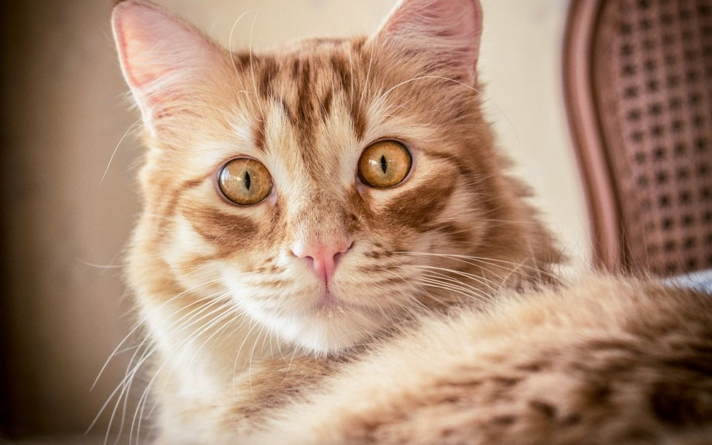
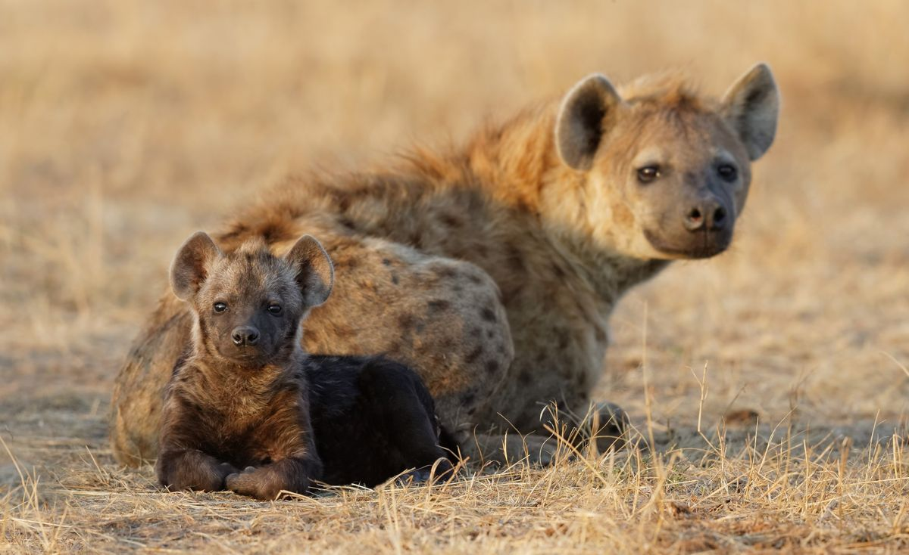

Animals
Animals are categorised into two:
- Domestic Animals
- Wild Animals
Domestic Animals
These are animals that have been tamed and kept by humans as animals,food sources,or pet. They include:
- Donkey
- Cat
- Cows
- Sheep
- Dogs
- Goats
Now,let's take a look at some domesticated animals
- Dogs
Domestic dogs are mostly kept as pets,though many breeds are capable of surviving on their own, whether in a forest or on city streets.

- Cats
Domestic cats are characterized by supple low-slung bodies, finely molded heads, long tails that aid in balance, and specialized teeth and claws that adapt them admirably to a life of active hunting.

- Sheep
Sheep or domestic sheep (Ovis aries) are domesticated , rumimant mammals typically kept as livestock

Wild Animals
These are mammals,birds,fish,or other creatures of a wild nature endowed with sensantion and the power of voluntary motion. Example of wild animals are:
- Lions
- Hyena
- Elephant
- Zebra
- Lion
The lion is a large cat of the genus Panthera. It has a muscular,broad-chested body, short, rounded head, round ears ,and a hairy tuft at the end of its tail.

- Hyena
There are three hyena species-spotted,brown,and stripped. Spotted hyenas are the largest of the three. They are fairly large in build and have relatively short torso with lower hindquarters, and sloping back. They have excellent night-time vision and hearing. Hyeas have long forelegs and a powerful neck and shoulders for dismebering and carrying prey .

- Cheetah
A cheetah is a large cat and native to Africa and central Iran. It is the fastest land animal , estimated to be capable of running at 80 to 128km/h.